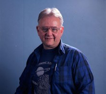

Please note: the AAS Obituaries are temporarily being hosted on this website while their full content is being ingested into the PubPub publishing platform newly adopted by the Bulletin of the American Astronomical Society. When the migration is complete, your existing links will take you to the final, migrated content. Contact peter.williams@aas.org with any questions.
William E. Shawcross (1934-2012)
William E. ("Bill") Shawcross, former managing editor of Sky and Telescope magazine, died on 3 September 2012 at age 77. Born in Norfolk, Virginia, on 29 November 1934, to William W. Shawcross and Jeannette Lee Manierre, Shawcross discovered his passion for science early at Norfolk’s Granby High School, where he served as president of the Science Club. He also acted in school plays, was an officer of the Creative Writing Guild, and member of the Little U.N. Following his graduation in 1953, he attended the University of North Carolina Chapel Hill, and in 1956 was hired as an editorial assistant at Sky and Telescope , in Cambridge, Massachusetts. There he took charge of the magazine's question-and-answer column, wrote frequent book reviews, and reported from astronomical conferences. Shawcross advanced to managing editor in 1963, and in 1988 to publisher, a post he held until his retirement in 1991.
At times, Shawcross was a latter-day incarnation of the gruff, hard-bitten news editor of 1930s-1940s Hollywood films, intensely proud of his publication and determined that everyone on staff — editors, artists, designers, proofreaders — strive for perfection. He was unapologetically direct, whether in his marginal notations in the magazine’s post-printing “comment copy” or in face-to-face editorial meetings, where he would mischievously fling a rubber chicken at employees who missed their deadlines. The consummate grammarian, Shawcross was the go-to guy for questions about semicolons and who-whom usage. The Sky and Telescope press release announcing his death states, "For decades he was the final reader of every word, including advertisements, appearing between the magazine’s covers. He was a meticulous overseer of the magazine’s style and grammar, as well as being always vigilant that his editorial colleagues checked their facts."
Highly curious, Shawcross pursued a host of side interests, such as botany, archaeoastronomy, beer brewing, tattoos, science fiction/fantasy, and (especially) computers. In the mid-1970s, he assembled one of the first Altair 8800 microcomputer kits, and later spearheaded the magazine's push into fully computerized publishing. Shawcross's blunt style was softened by a truly caring and generous attitude toward his coworkers and friends, all of whom he treated like extended family.
Photo: Sky and Telescope/Dennis DiCicco
Obituary written by: Alan Hirshfeld (University of Massachusetts, Dartmouth)
Additional links:
BAAS Citation: BAAS, 2017, 49, 009